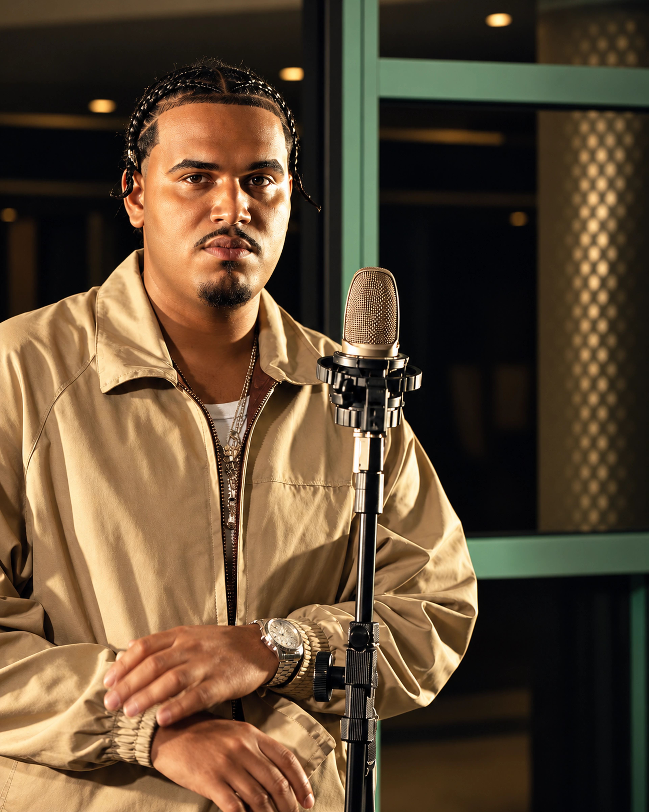

0202 / THE ROYAL LINE-UP
PUTODIPARIS
LIVE / PERFORMANCETRAP
PUTODIPARIS construiu uma discografia ligada ao trap brasileiro, passando pelos álbuns PUTODIPARIS (2021) e MÚSICA DA PUTARIA BRASILEIRA (2022), além de um registro ao vivo no Estúdio Showlivre em 2023.
Seu catálogo inclui colaborações com nomes como Brocasito, LEALL e VND e segue ativo em 2026 com novos singles, mantendo a conexão entre rua, estúdio e linguagem contemporânea do rap.
NO ROYALE
No Royale, PUTODIPARIS entra em formato live/performance, trazendo ao line-up uma vertente direta do trap e da cena urbana atual.